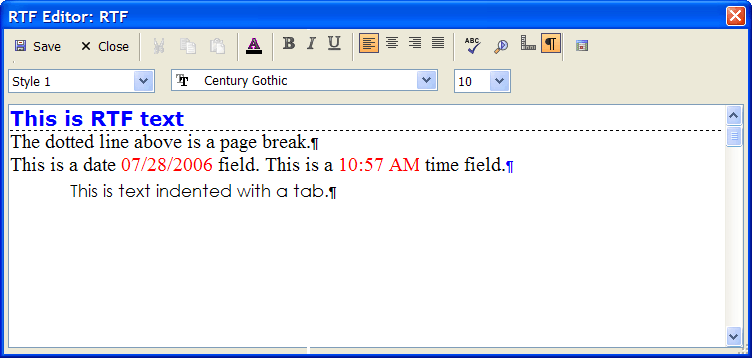
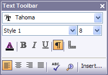
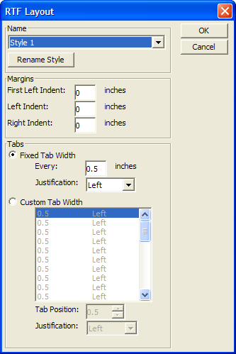
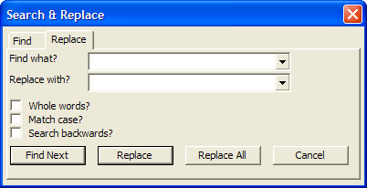

Working with Rich Text Fields
Adding Rich Text Fields to a Layout
Rich Text Fields can be placed on a layout like any other field: by
using the Drag-and-Drop List, the Rich Text
Tool  on the Toolbox, or from
the Object menu.
on the Toolbox, or from
the Object menu.
Once the field has been placed, you can set the following properties with the Properties dialog box.
Frame background color
Frame size and position
Border style, thickness, and color
To use an RTF field:
Place the cursor into the field.
Click the button to display the RTF Editor.

At this point you may insert, edit, or delete:
- Formatted text
- Page breaks
- Date stamps (the current value)
- Time stamps (the current value)
You can select text and apply the following attributes:
- Font
- Point size
- Font color
- Character attributes (bold, italic, underline)
You may display or hide
- Paragraph codes.
- Rulers
You may apply or edit layout styles, which define:
- Tab position
- Tab alignment
- Left and right margins
- Paragraph first line indents
You can change the font, point-size, and style of text using the Rich Text Toolbar, which appears automatically when the Rich Text Editor is activated, or by selecting Text > Properties.

Rich Text Toolbar
To change text you have already typed, highlight the text using the mouse or keyboard, and then set the properties. To change the properties of text you have not yet typed, simply set the properties and begin typing.
You can hide/show the paragraph symbol by clicking the button. You can also show/hide rulers by clicking the
 button.
button.
You can define up to eight Ruler Styles for an RTF object. These styles let you specify left, right, center and decimal tab stops. A ruler can contain 32 tab stops. The ruler styles appear in the Rich Text Toolbar with their default names: Style 1, Style 2, etc.
To access the ruler styles:
Right-click on a rich text object and select Rulers from the right-click menu.
The RTF Layout dialog box appears.

RTF Layout Dialog Box
For each style, you can adjust the margins and tabs, and rename style. Each Ruler Style can specify a first line left indent, a left indent, and a right indent. Also, text can be fully justified (i.e. right or left justified).
The Rich Text Editor has tools for both finding and replacing text. These tools can be activated from either the Toolbar or the Text menu by selecting Find or Replace. Either option opens the Search & Replace dialog box.

Search & Replace Dialog Box
The Search & Replace dialog box gives you options for matching case, whole words, and searching backwards.
The Find dialog box has three controls, Find what, Match whole word only, and Match case. Use the Find What box to enter the character(s) or word(s) for which you are searching. Check Match whole word only if you want to find only whole words. For example, if you type in "data," Alpha Five might find the word database if this option is not checked. Check the Match case check box to find only words with the same capitalization.
After specifying your criteria, click the Find Next button, to find the next occurrence of the text you entered.
The Replace dialog box has the same controls as the Find dialog box as well as a Replace with box. Use the Replace with box to enter the text to substitute.
After specifying the find and replace criteria, you have three options: Find Next, Replace, and Replace All. When you first start, click either the Find Next or Replace button to find the first occurrence. When it is found, the text is highlighted in the Rich Text Field or Object.
Click Replace to replace the highlighted text and find the next occurrence; click Find Next to find the next occurrence without replacing the highlighted text; or, click Replace All to replace every occurrence.
Inserting Date and Time Stamps
Both the Memo Editor and RTF Memo Editor support the Control+Shift+D and Control+Shift+T keyboard shortcuts for inserting date or time stamps. In addition, the toolbars in these editors have a button for inserting the date or time stamps.
Inserting or Removing a Page Break
Rich Text Fields and Objects let you insert page breaks. While viewing the text on the screen, page breaks appear as a dotted line, however when they are printed, they cause the current page to end and another to begin. This is useful for creating cover pages, summary pages, and to prevent related text from being split across a page.
The quickest way to insert a page break is by pressing CTRL+ENTER,
or click the Insert Page Break button  on the RTF Insert Toolbar.
To remove a page break, position the cursor at the end of the line before
the page break, and press DELETE.
on the RTF Insert Toolbar.
To remove a page break, position the cursor at the end of the line before
the page break, and press DELETE.